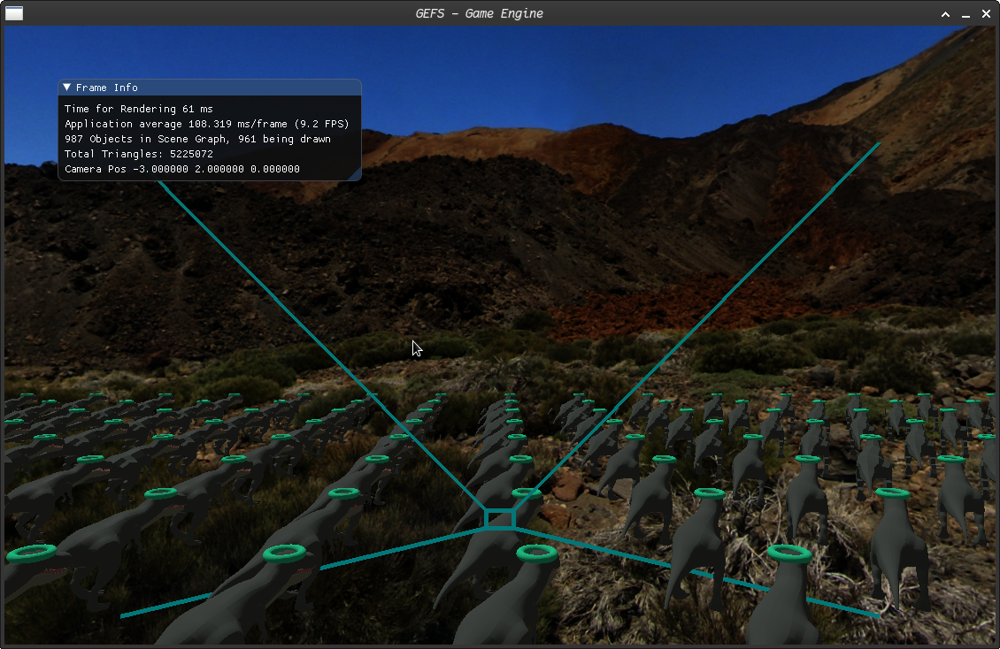
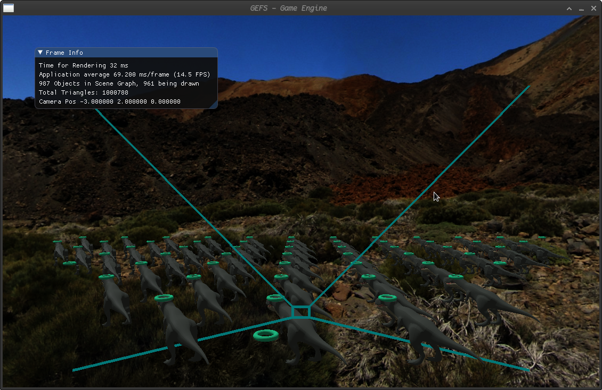
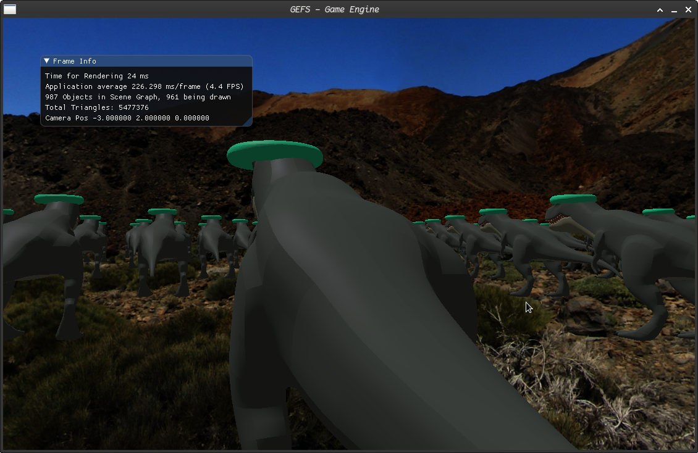
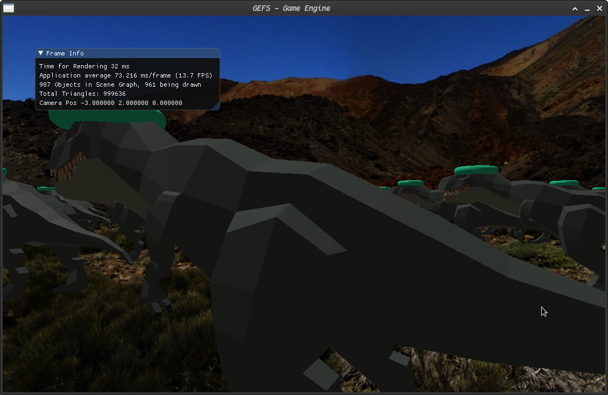

CSCI 8980 Project 2: Large Scenes
Overview
The goal for this assignment was to extend an existing game engine to incorporate large scene rendering functionality, such as view frustum culling and level of detail. The base game engine is GEFS (Game Engine From Scratch), created by Stephen J. Guy.
Group Members
- Bridger Herman
- Zoë Wentzel
Added Features:
- View Frustum Culling
- Automatic object bounds calculation
- Level of detail system
- Debug camera
Preliminary Work
Implementation Details
Debug Camera
An independently-controlled debug camera is supported, which allows the user to inspect the scene from a different perspective. The main camera view frustum, and optionally each object’s bounding radius can be drawn when the user is in debug mode. To achieve this, a separate "UserCamera" class was created, which encapsulates all the matrix math for the view and projection matrices, as well as the view frustum calculations for each camera. To switch which camera the user is seeing from, they can press 'z'. While viewing from the debug camera, the user can control their position with standard 'wasd' control. They can also control their Y position by pressing Shift+W or Shift+S. The normal camera can still be moved with the arrow keys while viewing from the debug camera.
Hierarchical Radius Calculations
Each model (parent and children) has two radii stored. This is because rather than hardcoding a radius for each object in the Prefab.txt file, we decided to automate the process. Each object (defined here as a model that has an object file) has its base radius, which is calculated automatically based on the maximum distance from each vertex in the object to the center of the model. This radius risks being larger than necessary if the model is not centered, but will never be too small. This radius can basically be thought of as the base size of the object model. However, models may need a second radius to handle translations and/or scaling (rotations do not matter since we are working with a circle detection system). As such, each model stores a final radius that represents its actual size after transformations. In addition, this grabs the largest size between itself and its children—so a model without an object file will have a final radius of its largest child. Figure 6 below illustrates this system in a simplified manner, with the black dot representing the origin.
An important thing to note is that even though the final picture has doubled the size of each of its components, the circle and square still have their radius from before they were put into a larger object. Because a model can exist on its own and as a child of one or more things, the only stored information is that which is always true—its size based on itself and its own children. As such, when we need the object radius for things such as view frustum culling and LOD, we use the final radius multiplied by any scaling that has happened by its parents.
There are a couple oddities of this system worth calling out. First off, we assume prefabs are centered around the origin. If we wanted just the translated circle above, it would operate with a radius of two even though its actual radius just needs to be one. This means that if we want an object to be translated while remaining the same size, we should do this in the creation of the object in the main.lua file. The second oddity is with object files. We discovered that some object file radius calculations were not happening correctly—the dinosaur, for example, has a number of child objects but only one has a radius that is greater than zero. This caused unnatural culling, which will be explained in the next section.
View Frustum Culling
The view frustum for each camera was calculated from the camera’s attributes: position, up, direction, field of view, aspect ratio, near plane, and far plane. Cross products were used to create the normals for each plane of the frustum, and these planes were tested against the position and radius of each object in the scene.
If objects were not in the view frustum, they and their children would not be drawn. More specifically, the draw method would not even be called for their children—this allowed us a hacky sort of object grouping that could also function as a spatial data structure. In our DinoHat example, we have two main objects: the dinosaur and the torus hat. If the parent model was determined to be culled, we would not check to see if the dinosaur or the torus needed to be culled (because they obviously would be).
Due to the nature of our cumulative hierarchical radius system, we can create models that represent a chunk of space. If none of that area is on the screen, then we no longer need to check individual components. If that area is on the screen, then we check each of its child objects to see if they are on the screen. This, again, functions as a spatial data structure! But it does require the creator of the prefab file to group things accordingly, as randomly grouping objects that are far away would create a radius so large it would get rid of any potential benefit.
-  No View Frustum Culling (9 fps)
-  With View Frustum Culling (15 fps)
As mentioned in the previous section, the radius for objects from object files were sometimes being set incorrectly. As such, the code mistakenly believed that some parts of the dinosaur were smaller than they were and would cull them even when they remained on the screen (leading to one of our favorite bugs, in which only the dinosaur’s teeth would remain). As a hacky way around this, we always draw models that have the string ".obj" somewhere in them if the code reaches them. Again, the code will never try to draw them if the parent object is entirely off the screen, allowing this method to successfully solve the problem without causing much overhead.
Level Of Detail
The LOD system we implemented is pretty simple, though it took a long time to make the design decisions for it. To determine the distance between the model and the camera, we simply use the distance between the camera position and model position, minus the radius of the model. An object can have LOD distance in which it switches from drawing its high LOD children to its low LOD children. Each model stores one of three LOD values (represented by an enum): always, low, or high. When a model is determining which of its children to draw, it always draws the children that are marked “always”. If the parent is closer than the LOD distance it has stored, it draws its children that are marked “high”, otherwise it draws the ones that are marked “low”. This system could easily support more LOD (such as “medium”), so long as there exist different models. However, we did not implement any sort of auto-decimator and thus we are reliant on having models of different quality.
-  No Level Of Detail (4 fps)
-  With Level Of Detail (13 fps)
High Level Analysis
All of our systems lead to improvements in the runtime of our code. The radius system does slow the start up of the code and inputting hardcoded radii into the prefab document may have been faster, but would have required more work per object and likely would have been less accurate. When the user wants to look at the entire scene, the level of detail makes a much larger difference than view frustum culling as nothing needs to be culled. In fact, in this situation, the view frustum culling slows down the program since it runs all the calculations to see if an object should be shown without saving any rendering time. For the most part, however, view frustum culling makes a larger difference because the user will generally be in the middle of the scene. The ability to not render certain models at all makes a huge difference in runtime. The LOD system does require more work to be put into setting up the prefabs and is also somewhat limited: a model cannot exist as low poly in one situation and high poly in another, something that could be desired but we decided was overly complicated for most scenarios. However, especially in situations where an incredibly high poly model may be wanted at close distances only, our LOD system allows for that potential and opens up doors from an artistic point of view. Of course, LOD by definition means that some models have less detail and, when not set up well, can cause a noticeable decline in rendering quality. Overall, however, all of our methods are necessary in order to have an acceptable FPS!
Code
Code from this project can be found in this GitHub repo.